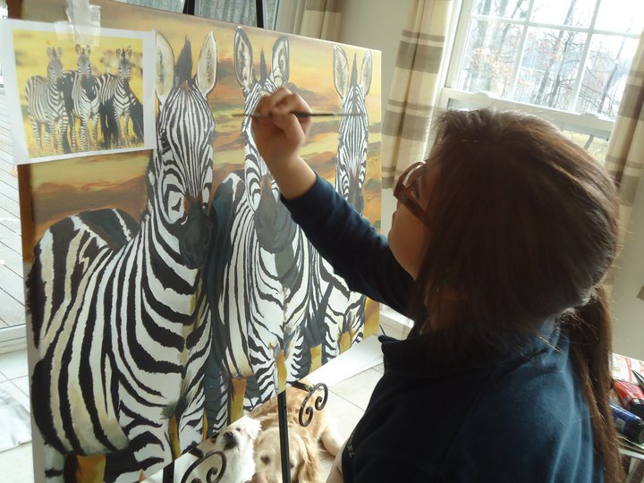
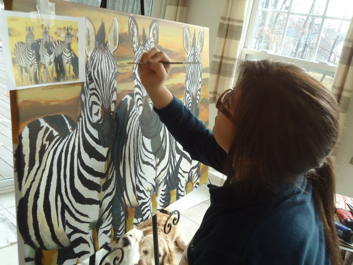
In Memory of Carlos Alfaro Jr. and Sr.
In Memory of Carlos Alfaro Jr. and Sr. 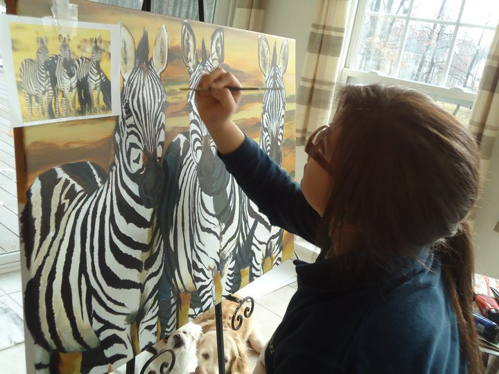
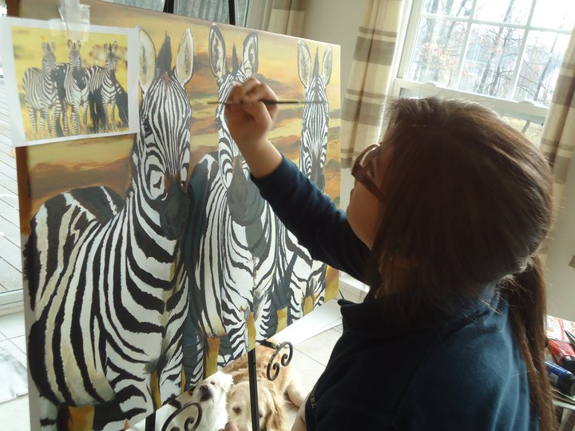
In Memory of Carlos Alfaro Jr. and Sr.
In Memory of Carlos Alfaro Jr. and Sr.My name is Karina Alfaro and here is a little about me. I was born in the state of Maryland in 93'. I am latin and proud to be a fluent spanish speaker. My father died on the line of duty as a firefighter when I was 13 years old but, the tragic experience has made me express my feelings stronger through my art work. I was always on the creative side as a child. I doodled constantly in class and at home so, my dad bought me art supplies every birthday and Christmas. He encouraged me to open my mind to all kinds of mediums of art. He would bring me home clay, paint burshes, markers and pencils when ever he got the chance. I have him to thank for my talent!
As a kid i was also an animal lover and had many pets growing up. This brought me to my first job at Petsmart. I worked there for about nine months and moved on to my current part time job working at an animal hospital. My dream has always been to work along side veterinarians, technicians and kennel staff! I enjoy my job and working with animals and plan to always have them in my life. Training dogs and horses has also been a passion of mine. I now have three horses that i ride competitively. I also have three dogs, two of them are aussies and one is a Pug. During the summer I practice shooting my bow for deer hunting season in the fall. I have always been an outdoors person and adventerous, wich i tend to show in my designs also. I am a very natural, simple and realistic artist. Finally, I was also a track and field runner and art scholar at Good Counsel High School. And although i love working with animals, i still want to pursue a second career that I enjoy involving art. Designing logos and creating drawings to help others has always felt rewarding to me!
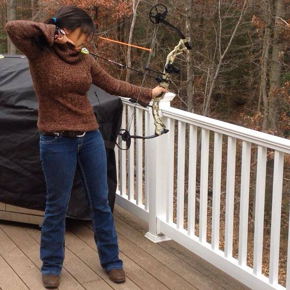 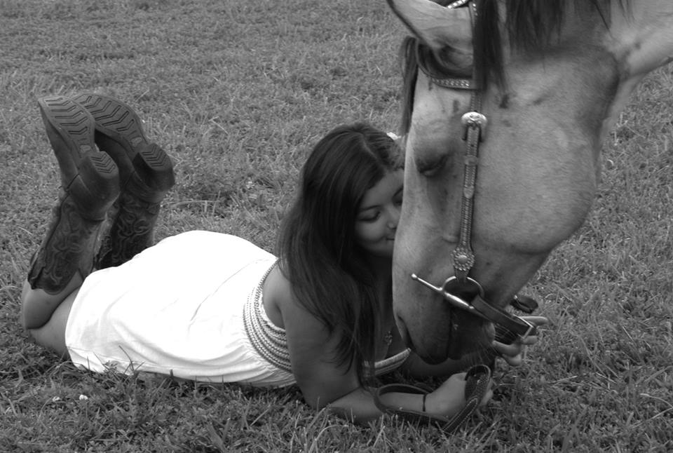 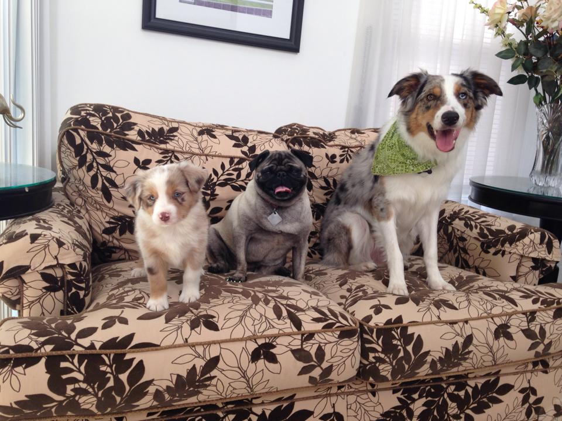 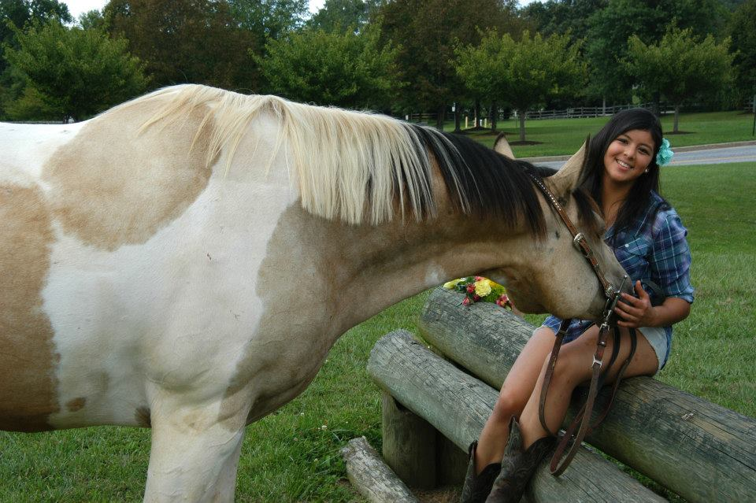 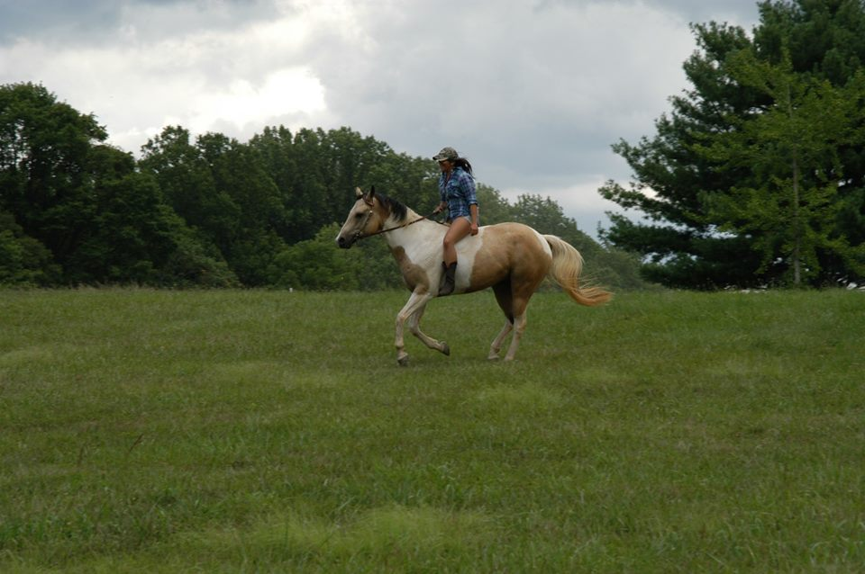 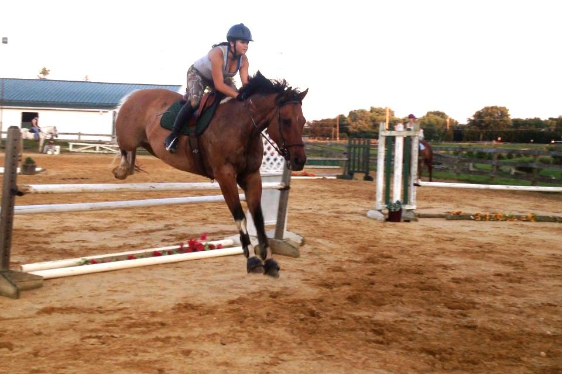 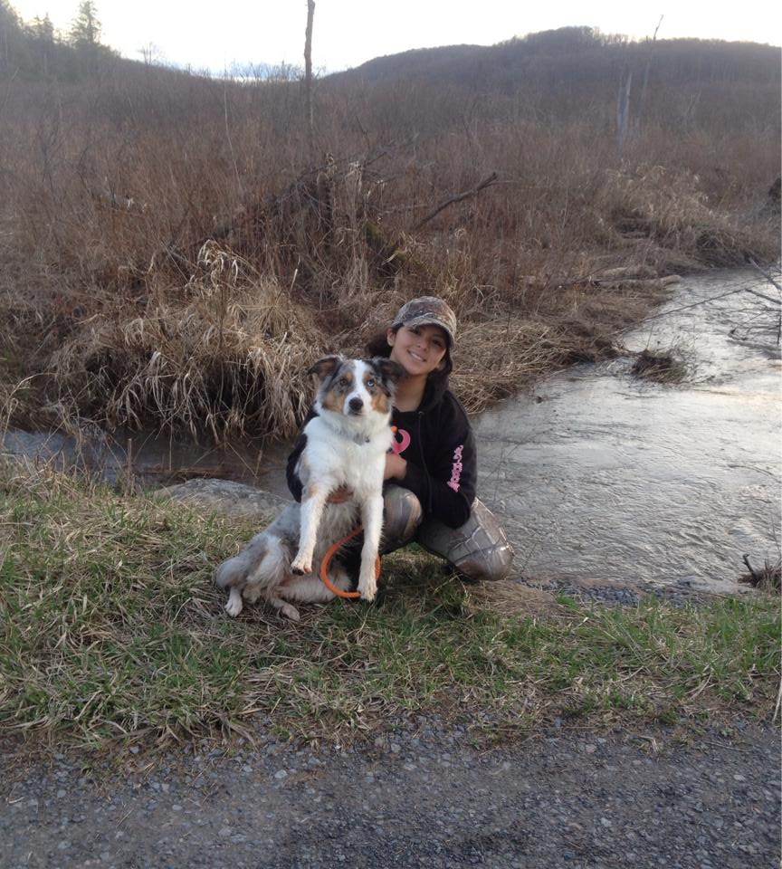